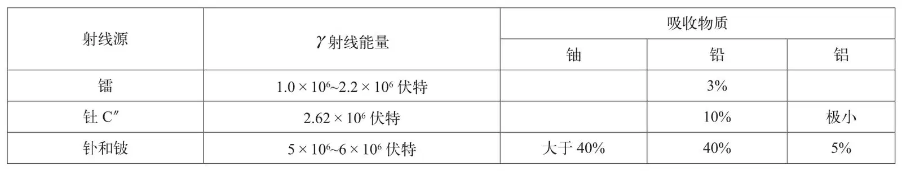
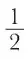
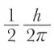

英文
英文帕特里克·布莱克特
编者按
正电子的发现虽然和狄拉克的电子理论相一致，但却给渴望清楚地解释正电子是如何产生的核物理学家们带来了一系列核物理上亟待解决的问题——通常情况下，正电子是在高能γ射线和重粒子甚至是和原子核的相互作用下产生的。布莱克特在这篇文章中对这个问题的处理非常符合一个实验科学家的身份：如何以最佳方式去解释当时断断续续积累起来的关于正电子的实验数据。 英文
用云室法对宇宙射线的研究引发了正电子的发现[1]。在和宇宙辐射有关的高能粒子的轨迹中，发现了一些与负电子轨迹完全一致，只是在磁场作用下偏转方向与其相反的轨迹。现在在地球上，我们也能获得低能的正电子，因为已经有研究发现，在物质吸收硬γ射线以及在一些核反应发生时都可以产生正电子。因而，在实验室中获得正电子已经是一件很简单的事情了。 英文
可以根据电离情况计算出正电子的电量和质量。比如，安德森[2]估计由于快正负电子在磁场中产生相同的偏转轨迹，因而它们之间的电离情况的差别不会大于20%。因为对非常快的粒子来说，电离情况依赖于粒子电量的平方，但是与粒子的质量几乎无关，而正负电子电量之间的差别不可能有10%那么大。另外，对于电量一定的慢粒子，电离情况随粒子质量的变化而变化，所以，相同的电离情况意味着正负电子之间的质量差别应该小于20%。为了得到与正电子性质有关的进一步的信息，我们可以详细地研究产生正电子的最简单的情况，也就是说，研究重元素吸收单色γ射线的情况。 英文
由钍C″放射出的γ射线经过严格的过滤后将基本达到单色的状态，并带有2.62×106伏特的能量。安德森和尼德迈耶[3]，居里和约里奥[4]，迈特纳和菲利普[5]都发现，当这样的射线照射重元素时，就会产生正电子。 英文
铍受到α粒子轰击后的辐射产物被重元素吸收时也可以产生正电子[6]。虽然这种辐射产物很复杂，包括中子和能量大于5.0×106伏特的γ射线，但是居里和约里奥[6]已经通过吸收实验表明，正电子的确主要是由重元素吸收γ射线而产生的。 英文
综合居里、约里奥、格林伯格[7]的工作，以及查德威克、布莱克特、奥基亚利尼未发表的结果可以得到下表的数据。此表给出了不同元素在不同放射反应中前向发射的正电子数量与观测到的负电子数量的比值。因为我们并不知道正电子角分布的实际情况，而且可能还应该考虑某个特定的实验装置对实验结果的影响，因此，这些比值只是对正电子产生频率的粗略表示。 英文
吸收γ射线所产生的正电子数量

发射出的负电子包含两种成分，一种是带有量子全部能量的光电子，能量为2.62×106伏特；另一种是前向发射时最高能量为2.39×106伏特的康普顿电子。如表格所示，正电子的数量随着量子能量和吸收物质原子序数的增加而迅速增加。 英文
如果从上面的数据出发，计算出重原子在吸收一个能量为5×106伏特的量子后产生正电子的有效面积，则得到的结果远远大于相应原子核的横截面积。这个结果表明，正电子的产生不可能主要是与原子核有关的现象。 英文
对粒子能量的考虑会使以上的观点更令人信服。对于各种不同的吸收物质，在给定的辐射下产生的正电子的最高能量似乎都是大致相同的。如果产生的粒子是由γ射线与原子核发生反应所致，那么，不同类型的原子核所产生的粒子的能量应该是不一样的。 英文
吸收了辐射能量为5.0×106伏特和2.62×106伏特的正电子，其最大能量分别约为4×106伏特和1.6×106伏特，也就是说，在各种情况下，正电子的能量都要比量子能量大约少100万伏特。 英文
如果正电子确实是在原子核外产生的，那么就有以下几个重要结论：
（a）根据原子理论，既然肯定没有正电子在原子核外长期存在的余地，那么来自那里的正电子必然是在那里产生的，而如果那里产生了正电子，考虑到电荷守恒，那里也必将同时产生一个带有相同电量的负电子。实验上确实观测到了成对的粒子轨迹，这显然可以解释成同时发射出正负电子对，实验有力地证明了以上的结论。 英文
要产生这样一对正负电子需要消耗的能量为(m1+m2)c2。如果两个粒子的质量都与电子相同，那么这个能量就是1.01×106伏特，这样，在辐射能量为2.62×106伏特时，产生的正负电子对的能量就不可能超过1.61×106伏特。安德森证实了上述的情况。此外，没有形成成对轨迹的单个正电子的最大能量应该也是1.61×106伏特。查德威克、布莱克特和奥基亚利尼用实验测定了这个能量的最大值，他们得到的初步结果*是1.58±0.07×106伏特，和理论值非常吻合。 英文
（b）正电子应该具有

的自旋，并遵循费米–狄拉克统计。由于观察到能量在正负电子产生阶段是守恒的，那么可以预见，在该阶段动量和角动量也是守恒的。因为一个量子只能激发角动量改变0或1的变化，所以如果一个量子产生一对粒子，其中一个带有自旋
，另一个一定具有相同的自旋。即使把可能出现的把原子核自旋的变化也考虑进来，这个论点仍然成立，因为这些自旋的变化应该也是按整数变化的。 英文
（c）一个量子和一个原子相互作用产生一对电性相反的电子，这个过程的必然结果是会出现一个逆过程，在这个逆过程中，一个正电子和一个负电子相互作用并与一个原子场作用以产生一个量子的辐射。由于发生这种情况的条件并不罕见，因而可以预期，在一般密度的物质中，正电子是不可能长期存在的。 英文
根据实验数据并运用简单的物理原理，我们得到了关于正电子的存在状态及其性质的结论。狄拉克的电子理论预言了具有这些性质的粒子的存在，因而有充分的理由相信他的理论是基本正确的。 英文
狄拉克成功地构建了电子在势场中运动的波动方程，并保证了方程的相对论不变性。对于氢原子而言，这个新波动方程的解不仅完全解释了谱线的精细结构，还给出了电子本身存在自旋和磁矩的合理解释。 英文
然而，除了与实验中观测到的正常电子能级相对应的解以外，还有一些解不与任何可观测到的现象相对应。这些解似乎预见到了电子具有负动能的状态，因而无法对应于任何一般意义上的粒子。这些电子态不能被忽略，因为理论上存在这些电子态和对应于正动能的正常态之间的量子跃迁。狄拉克提出，如果假设正常情况下所有的负能态都被占满，并且这些态上的所有电子都不产生外场，那么这个理论上的困难就被排除了。 英文
从这个观点来看，只有未被占据的负能电子态或“空穴”才能对应于实验上可观测到的粒子。根据理论进一步得出，这些未被占据的负能电子态在外场中表现得就像一些与负电子具有相同质量和自旋，但带有相反电荷的粒子。实验上发现了正电子进而解决了一个重大的理论难题，而在这个理论难题得到解决之后，狄拉克理论可以解释的现象也随之得到了极大的扩展。 英文
由于分析上的困难，将狄拉克理论应用于某些特殊现象的工作并没有深入开展，但是奥本海默和普莱赛特[8]已经大致地计算了物质吸收硬γ射线时产生带相反电荷的电子对的概率。这些理论上的结果，无论在反应发生的量级上，还是在反应对量子能量和吸收物质原子序数的依赖情况上，都与实验结果大致吻合。 英文
由理论计算得出：由于正电子的产生，铅和锡作为吸收物质额外多吸收了2.62×106伏特的辐射能量，这个能量是正常散射情况下所吸收能量的25%，或是光电反应过程中所吸收能量的15%。这些数据与塔兰特和格雷观测到的实验结果基本一致。因此我们可以得到这样的结论：大部分的反常吸收都有可能归因于正电子的产生。 英文
我们可以预期，吸收的能量可以以两种方式再次辐射。一是发射出来的一个正电子可能会在与使其产生相逆的过程中消失，也就是说，和一个负电子以及原子核发生相互作用，产生一个能量为100万伏特量级的量子（见上面的结论（c））。二是按照狄拉克的理论，正电子也可以以另一种方式消失，即正电子和一个自由的或处于弱束缚状态的负电子发生相互作用后，两者都消失并放射出两个能量为50万伏特的量子。†值得注意的是，由塔兰特和格雷估计的再次辐射的能量主要就是由这两部分所组成，即50万伏特和100万伏特。但是，费米和乌伦贝克[9]发现，理论上硬成分的辐射能量的强度要远远小于实验上的观测值。 英文
我们可以把原子吸收硬γ射线从而产生带有相反电荷的电子对的过程看作是一个通过“虚”电子来实现的光电吸收过程，这个“虚”电子即原子核附近具有负动能的电子。根据贝克[10]的理论研究，我们可以认为这些虚电子具有2mc2量级的结合能。贝克还表示，吸收过程中的有效虚电子数和原子序数的平方成正比，并且每个铅原子中大约有一个虚电子。理论结果还显示，电子对的产生过程发生在与原子核的距离小于h/2πmc = 3.85×10－11 cm的范围内，这个范围恰好在K壳层之内。 英文
居里和约里奥[11]发现，当铝和硼被α粒子轰击时产生正电子，而这些正电子的能量高于伴随其产生的负电子的能量。然而银、锂、石蜡在α粒子轰击下没有产生正电子。居里和约里奥认为，正电子是在原子核的裂变过程中产生的，但是似乎是由原子核发射出的γ射线内转换而成，而这个过程有可能主要发生在原子核之外。为了用这种方式解释正电子的产生，γ射线的内转化概率必须接近单位1。‡正电子比负电子能量高可以解释为：为了从原子核势场中逃逸，正电子要获得能量，而负电子要损失概率。电子对产生的位置越靠近原子核则最终的动能差异也将越大，因而对于上述的内转换过程这个能量的差异也会大于通常的外部吸收过程，因为前者依赖于球面波，而后者依赖于平面波。 英文
虽然正电子的最初发现和宇宙辐射有关，但目前还不清楚正电子在这个复杂现象中到底扮演什么样的角色。不过有以下几点是可以肯定的[12]：（i）在海平面上发生宇宙射线电离的快粒子中，正负电子大约各占一半。它们的能量从几百万伏特到将近1010伏特不等。（ii）在“簇射”中也得到了相同的正负电子比。因此簇射似乎意味着由初级辐射引发的一次或多次碰撞过程导致了许多对正负电子的产生。狄拉克理论指出，在吸收γ射线和高能粒子的过程中产生了单个电子对，这具有重大的意义[13]，但是到现在为止，这些还不能为形成簇射的多个电子对的产生机制提供线索。（iii）事实表明，绝大多数入射到地球大气层中的粒子都带有正电荷[14]。 英文
由于在海平面上极少能探测到质子，那么带正电荷的入射粒子就很有可能是正电子而不是质子。如果事实的确如此，那么跨星系空间的宇宙射线流将主要由正电子构成；既然已经估算出这些辐射粒子的总质量大约是所有恒星和星云质量的1/1,000[15]，那么可以认为，虽然正电子因为寿命短暂而在地球上很少见，但它仍然是整个宇宙的重要组成部分。 英文
（王静 翻译；李军刚 审稿）
* 正电子的质量可以通过以下方程
Emax=hv－(m1+m2)c2
并代入hv=2.62×106伏特，Emax=1.58±0.07×106伏特得到。
我们发现
m2=(1.04±0.14)m1
这个结果给出了迄今为止人们对正电子质量的最为精确的估计值。
† 狄拉克计算了这种湮灭的概率，结果表明一个正电子在水中的寿命要小于10－9秒，并且其寿命与密度成反比。如果这个预测的过程得到了实验上的证明，那么就可以假定逆过程是有可能存在的，即通过两个高能量子的碰撞产生一对符号相反的电子。后一个过程后来成为第一例已知的量子“干涉”；可想而知这个过程所具有的重大宇宙学意义。
‡ 奥本海默和普莱塞特（在上述引文中）预测的理论值要小得多。